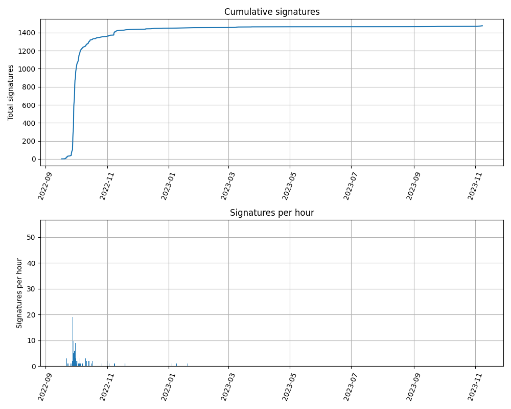
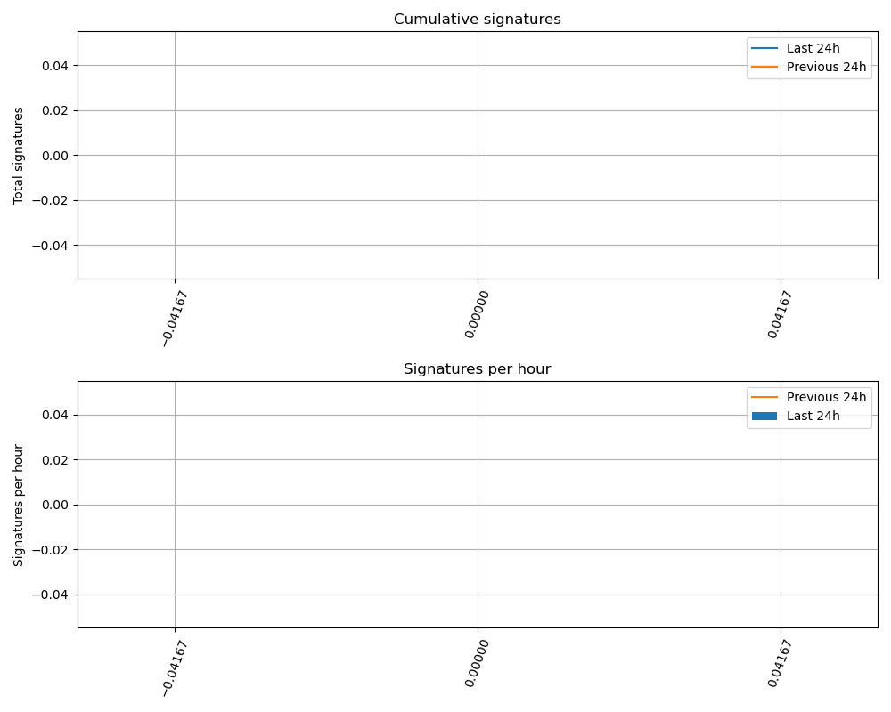

Sign the letter
Read the letter
Why should I sign?
Share
Stats
Contact us
Follow Neuromatch
Open letter to the WHOSTP and Subcommittee on Open Science
Graphs
All times are UTC.
All-time

Last 48 hours
